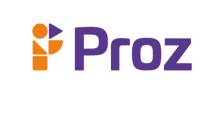

|  | Home | Quem somos | Contato |
Quem somosA Proz é uma empresa de educação profissional e temos como propósito levar formação de qualidade, que gera emprego real aos nossos estudantes. Somos a rede de escolas onde se aprende fazendo e nossos estudantes se tornam profissionais prontos para colocar seu conhecimento em prática. 5 motivos para estudar
ObjetivosO principal foco da Proz Educação é a empregabilidade. Ao longo do curso, você terá mentorias de carreira e será apresentado às empresas parceiras da Proz. Te ajudaremos a desenvolver habilidades e a conquistar visibilidade no mercado de trabalho, para que consiga atingir seus objetivos profissionais. |
|
Todos os direitos reservados |
|